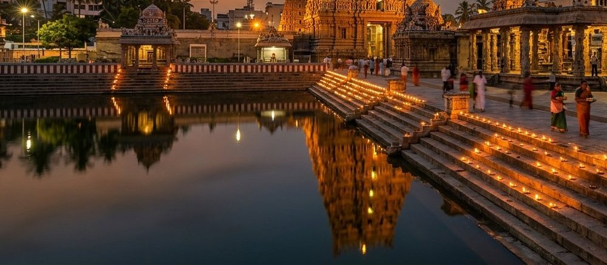

Rail, Metro & Bus Access
Accessible via Mylapore local transit corridors and suburban stations, with short walk-in approach along Gopuram Road.
Contact the temple office for darshan, pooja bookings, festival arrangements, donations, pilgrim accommodation and volunteering.
Reach the temple administration desk for darshan schedules, seva enquiries, festival guidance and official donation receipts.

Phone: +91 98402 41890
Email: seva@sridharmakshetra.org
Address: 14 Gopuram Road, Mylapore, Chennai – 600004
Office hours: 6:00 AM – 12:30 PM & 4:30 PM – 8:30 PM
For seva bookings and official receipts, communicate only through the temple office channels listed above.
Demo form only. Connect a secure backend, spam protection and privacy notice before collecting devotee information.
Add verified transport, parking, accessibility and visitor route information.
Publish dharamshala availability, booking terms, facilities and official contact.
Explain eligibility, duties, schedule and the official registration process.
Plan your arrival route and connect directly with the appropriate administrative desk during office hours.
Accessible via Mylapore local transit corridors and suburban stations, with short walk-in approach along Gopuram Road.
Designated pilgrim drop-off near the east entrance; check festival-day traffic advisories before arriving by car.
Step-free approach assistance and seating support available upon request at the east mandapam desk.
Archana slots, Abhishekam guidance and festival schedule updates.
Donation acknowledgements, E-Hundi enquiries and official records.
Group meal coordination, in-kind offerings and prasadam queries.
Pilgrim accommodation guidance and community seva sign-ups.